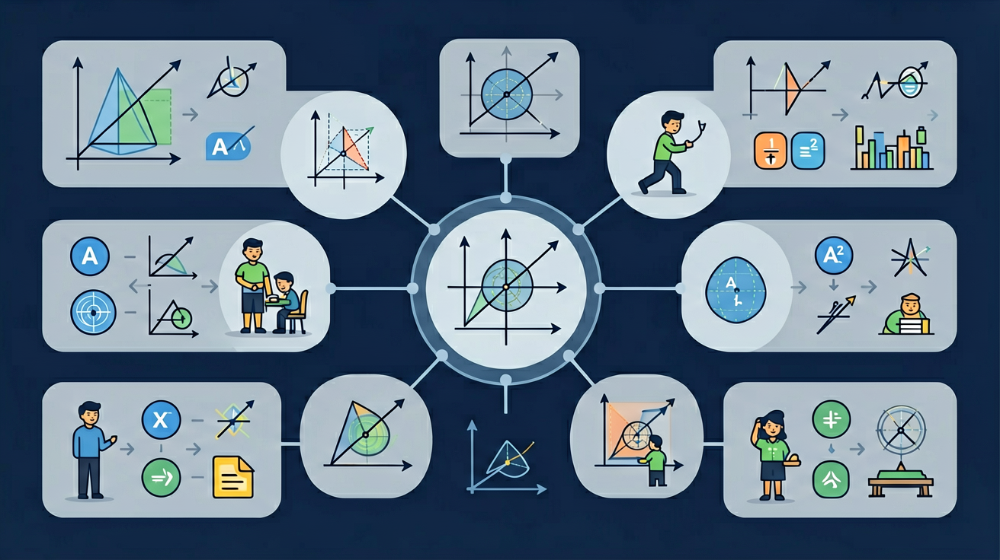

🎯 能判断方程是否为一元一次方程（标准：一个未知数、次数为1、整式）
🎯 能正确运用等式性质解方程（移项/去分母/系数化1）
🎯 能分析实际问题列出方程（设未知数→找等量关系→列式）
❓ 为什么解方程总要'移项'？直接算不行吗？
❓ 遇到有小数或分数的方程就头疼，有没有更简单的方法？
❓ 列方程解应用题时，怎么知道该设哪个为x？
学完这一课，这些问题你都能自信地回答。
哪个是一元一次方程？
解方程2(x-1)=4的第一步是？
小明去超市买苹果，每千克5元，他买了若干千克后，共花了30元。这里有一个未知数——他买了多少千克？
我们不能直接看出答案，但我们可以用字母代替未知数，建立一个等量关系！
设买了 x 千克，则：
这就是一个一元一次方程！
一元一次方程：只含有一个未知数，且未知数的最高次数为1的等式。
特征三要素：① 是等式 ② 只含一个未知数 ③ 未知数次数为1
| 表达式 | 是方程？ | 是一元？ | 是一次？ | 结论 |
|---|---|---|---|---|
| 2x + 3 = 7 | ✓ | ✓ | ✓ | ✓ 是 |
| x² = 4 | ✓ | ✓ | ✗(2次) | ✗ 否 |
| x + y = 5 | ✓ | ✗(两个) | ✓ | ✗ 否 |
想象一架平衡的天平。左边放了 2x 和 3，右边放了 9。天平平衡，说明两边相等。
要保持天平平衡，只要两边做相同的操作，等式就不变！
例题：解方程 2x + 3 = 9
❌ 错误示范：解 3x - 4 = 8
错误做法：3x = 8 - 4 = 4，x = 4/3
问题：移项时符号没变！-4 移到右边应该变成 +4
✅ 正确做法：3x = 8 + 4 = 12，x = 4
学校组织春游，共有52名同学参加。如果每辆车坐8人，还差4个座位；如果每辆车坐6人，则多余2个座位。问：共有几辆车？
任务描述：小李和小王一起卖报纸，小李卖出的份数是小王的2倍少5份，两人共卖出115份。请用一元一次方程求出两人各卖了多少份。
设小王卖了 x 份，小李卖了 (2x-5) 份
方程：x + 2x - 5 = 115
3x = 120，x = 40
小王卖了 40 份，小李卖了 75 份
验算：40 + 75 = 115 ✓
了解古代数学家如何发现方程，从古巴比伦到中国《九章算术》
价格计算、速度问题、工程分配——方程无处不在
鸡兔同笼问题的方程解法，让古典趣题焕发新生
下一步学习两个未知数的方程组，解决更复杂的问题